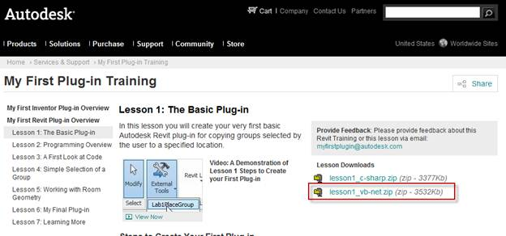

My First Revit Plug-in in VB
Back in May, we published the wonderful new Revit API training tool, the self-paced My First Revit Plug-in guide, originally based on the C# programming language.
Based on popular demand, we have now added new VB.NET samples.
So regardless whether you are new to this training or have already gone through it once with the C# code, now is your chance to choose the language you prefer, C# or VB.Net, at www.autodesk.com/myfirstrevitplugin.
The explanations in the lessons are still written for C#, but now depending on your language preference you can follow along in VB.Net!
